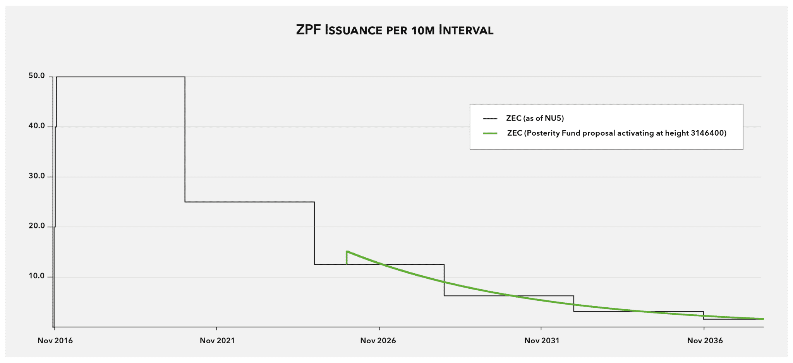

ZIP:
Title: Smooth Out The Block Subsidy Issuance
Owners: Jason McGee <jason@shieldedlabs.com>
Mark Henderson <mark@equilibrium.co>
Tomek Piotrowski <tomek@eiger.co>
Mariusz Pilarek <mariusz@eiger.co>
Original-Authors: Nathan Wilcox
Credits:
Status: Draft
Category: Consensus
Created: 2023-08-23
License: BSD-2-Clause
The key words “MUST”, “SHOULD”, “SHOULD NOT”, “MAY”, “RECOMMENDED”, “OPTIONAL”, and “REQUIRED” in this document are to be interpreted as described in RFC 2119. [1]
"Network upgrade" - to be interpreted as described in ZIP 200. [2]
“Block Subsidy” - to be interpreted as described in the Zcash Protocol Specification (TODO ZIP Editors: link from comment).
“Issuance” - the sum of Block Subsidies over time. (TODO ZIP Editors: work out if this definition is correct or can be removed).
“ZsfBalanceAfter(h)” is the total ZEC available in the Zcash Sustainability Fund (ZSF) after the transactions
in block h, described in ZIP draft-zsf.md. In this ZIP, the Sustainability Fund is used to pay out Block Subsidies
from unmined ZEC, and other fund deposits.
Let PostBlossomHalvingInterval be as defined in [#protocol-diffadjustment]_.
This ZIP proposes a change to how nodes calculate the block subsidy.
Instead of following a step function around the 4-year halving intervals inherited from Bitcoin, we propose a slow exponential “smoothing” of the curve. The new issuance scheme would approximate the current issuance over 4-year intervals.
The current Zcash economic model, inherited from Bitcoin, includes a halving mechanism which dictates the issuance of new coins. While this has been foundational, halvings can lead to abrupt changes in the rate of new coins being introduced to the market. Such sudden shifts can potentially disrupt the network's economic model, potentially impacting its security and stability. Furthermore, the halvings schedule is fixed and does not provide any way to "recycle" funds into future issuance.
To address this, we propose issuing a fixed portion of the pending funds-to-be-issued in each block. This has the effect of smoothing out the issuance curve of ZEC, ensuring a more consistent and predictable rate of coin issuance, while still preserving the overall supply cap of 21,000,000 coins. This mechanism by itself (without other anticipated changes) seeks to preserve the core aspects of Zcash's issuance policy and aims to enhance predictability and avoid sudden changes. By making this shift, the average block subsidy over time will remain predictable with very gradual changes.
However, we anticipate schemes proposed in [#draft-zsf]_ where the amount of funds-to-be-issued may increase. In that scenario, this issuance mechanism would distribute that increase starting in the immediately following block and subsequent blocks. Because this distribution mechanism has an exponential decay, such increases will be spread out in miniscule amounts to future blocks over a long time period. This issuance mechanism thus provides a way for potential increases or decreases of issuance while constraining those changes to be small on a short time scale to avoid unexpected disruptions.
Additionally, the current Bitcoin-style issuance does not take into account the current balance of ZsfBalanceAfter(h). If [#draft-zsf]_ were to activate without a change to the issuance mechanism, then some funds would never be disbursed after they are deposited back into the ZSF.
In summary, by introducing a smoother emissions curve, we: - maintain the economic viability of Zcash - provide predictability of the issuance rate, allowing only miniscule changes over short time ranges - enhance Zcash's stability as the network evolves.
Smoothing the issuance curve is possible using an exponential decay formula that satisfies the following requirements:
Define constants:
“BLOCK_SUBSIDY_FRACTION” = 41 / 100,000,000 or 0.00000041
"DEPLOYMENT_BLOCK_HEIGHT" = 2726400
At the DEPLOYMENT_BLOCK_HEIGHT, nodes should switch from the current issuance calculation, to the following:
Given the block height h define a function BlockSubsidy(h), such that:
BlockSubsidy(h) = Block subsidy for a given h, that satisfies above requirements.
Using an exponential decay function for BlockSubsidy satisfies requirements R1 and R2 above:
BlockSubsidy(h) = BLOCK_SUBSIDY_FRACTION * ZsfBalanceAfter(h - 1)
Finally, to satisfy R3 above we always round up to the next zatoshi.
BlockSubsidy(h) = ceiling(BLOCK_SUBSIDY_FRACTION * ZsfBalanceAfter(h - 1))
BLOCK_SUBSIDY_FRACTIONLet IntendedZSFFractionRemainingAfterFourYears = 0.5.
The value 41 / 100_000_000 satisfies the approximation:
(1 - BLOCK_SUBSIDY_FRACTION)^PostBlossomHalvingInterval ≈ IntendedZSFFractionRemainingAfterFourYears
Meaning after a period of 4 years around half of ZSF_BALANCE will be paid out
as block subsidies, thus satisfying R4.
DEPLOYMENT_BLOCK_HEIGHTThe deployment should happen at the next halving, which is block 2726400.
Since there is a planned halving at this point, there will already be a significant "shock" caused by the drop in issuance caused by the halving. This reduces surprise and thus increases security. Also, due to the nature of the smoothed curve having a portion of the curve above the respective step function line at times, this will maximally reduce the issuance shock at the DEPLOYMENT_BLOCK_HEIGHT.
The following graph, taken from the ECC blog post, illustrates the smoothed curve. Note that depending on when the network upgrade takes place the disbursement may temporarily increase.

[TODO: We should update this graph now showing the deployment at 2726400]
The suggested implementation avoids using float numbers. Rust and C++ will both round the result of the final division up, satisfying R3 above.
We encourage readers to run the following Rust code, which simulates block subsidies. According to this simulation, assuming no deflationary action, block subsidies would last for approximately 113 years:
```rust fn main() { // approximate available subsidies in August of 2023 let mut available_subsidies: i64 = 4671731 * 100_000_000; let mut block: u32 = 0;
while available_subsidies > 0 {
let block_subsidy = (available_subsidies * 41 + 99_999_999) / 100_000_000;
available_subsidies -= block_subsidy;
println!(
"{} ({} years): {}({} ZEC) {}({} ZEC)",
block, // current block
block / 420_768, // ~ current year
block_subsidy, // block subsidy in zatoshis
block_subsidy / 100_000_000, // block subsidy in ZEC
available_subsidies, // available subsidies in zatoshis
available_subsidies / 100_000_000 // available subsidies in ZEC
);
block += 1;
}
} ```
Last line of output of the above program is:
47699804 (113 years): 1(0 ZEC) 0(0 ZEC)
Note the addition of 99,999,999 before division to force rounding up of non-zero values.
[1] RFC-2119: https://datatracker.ietf.org/doc/html/rfc2119
[2] ZIP-200: https://zips.z.cash/zip-0200
[3] ZIP-XXX: Placeholder for the ZSF ZIP